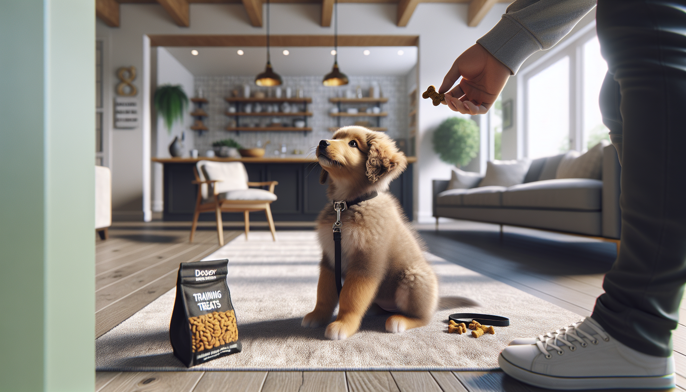

The first six months of a dog’s life are full of growth, curiosity, and learning. Whether you are raising a young puppy, welcoming a rescue dog, or helping an adolescent settle into your home, this stage is the perfect time to teach practical life skills. The good news is that training does not need to be complicated. In fact, a handful of foundational cues can make daily life easier, safer, and more enjoyable for both you and your dog.
If you have ever wondered which commands matter most, start with the basics that support communication, impulse control, and safety in real-world situations. Science-backed, reward-based training helps dogs learn faster, build confidence, and strengthen their bond with their people. Rather than focusing on perfection, aim for consistency, clarity, and short, positive practice sessions.
Below are five commands every dog should know by 6 months, along with why each one matters and how to teach it effectively.
By six months, many dogs are old enough to understand simple cues, routines, and household expectations. This does not mean your dog should be flawless by this age. Puppies and recently adopted dogs are still developing physically and emotionally, and rescue dogs may need extra time to decompress. But introducing core commands early gives your dog a strong foundation.
Early training helps prevent common behavior problems before they become habits. Jumping, pulling on leash, running through doors, and ignoring their name may seem minor at first, but these behaviors can become frustrating or even dangerous as dogs grow larger and more confident. Teaching essential commands early also supports socialization by helping your dog stay calm and responsive in new environments.
Keep sessions short, usually 3 to 5 minutes at a time, and use rewards your dog truly loves. For many dogs, that means tiny treats, praise, toys, or access to something they want, like going outside. Reward-based methods are backed by research and are associated with better learning outcomes and less fear than punishment-based training.
Sit is often the first command people teach, and for good reason. It is easy for many dogs to learn, and it gives you a simple way to ask for calm behavior. A dog who can sit politely is easier to manage at the door, before meals, when greeting people, and during vet visits.
To teach sit, hold a treat close to your dog’s nose and slowly move it upward and slightly back over their head. As your dog follows the treat, their rear will often lower to the floor naturally. The moment it does, mark the behavior with a cheerful word like “yes” or a clicker, then reward. Once your dog is reliably offering the behavior, add the verbal cue “sit” just before the motion.
Sit is not just about obedience. It teaches your dog that calm behavior makes good things happen, which is one of the most valuable lessons in all of training.
Come, also called recall, is one of the most important commands your dog can learn. If your dog slips a leash, heads toward a road, or gets distracted at the park, a strong recall can protect them from serious danger. It can also make off-leash activities safer when appropriate and legal in your area.
Start in a quiet space with minimal distractions. Say your dog’s name followed by “come” in a happy, upbeat voice. Then move backward a few steps to encourage your dog to follow. When they come to you, reward generously with treats, praise, or play. Make coming to you the best part of their day.
A few important rules: never punish your dog for coming, even if they were doing something you did not like before. If “come” predicts scolding, leash clipping, or the end of fun every time, your dog will be less likely to respond. Instead, build a positive association through repetition and high-value rewards.
Reliable recall takes time, but it is one of the most worthwhile skills you can teach.
Leave it tells your dog to disengage from something they should not have, such as dropped food, trash, medication, wildlife, or another dog’s toy. This cue is incredibly useful for safety and impulse control.
To begin, place a low-value treat in your closed hand and present it to your dog. They may sniff, lick, or paw at your hand. Wait quietly. The moment your dog backs off or looks away, mark and reward with a different treat from your other hand. This teaches your dog that ignoring the first item earns something better. Once your dog understands the game, add the words “leave it.”
As your dog improves, practice with an item on the floor while keeping it covered with your hand or foot if needed. Gradually increase difficulty, but always set your dog up to succeed.
Leave it is especially helpful for puppies who explore the world with their mouths. It is a practical command that can prevent emergency vet visits and everyday frustration.
Down is more than a cute trick. Lying down can help dogs settle, relax, and pause their excitement. It is useful when guests arrive, during family meals, at outdoor cafes, or anytime your dog needs help shifting from active to calm.
To teach down, start with your dog in a sit or standing position. Hold a treat near their nose, then slowly move it down toward the floor and slightly out in front of them. Many dogs will follow the lure and lower their elbows to the ground. As soon as they do, mark and reward. Add the cue “down” once the movement becomes predictable.
Some dogs, especially larger breeds or dogs with previous discomfort, may find this cue harder than sit. Be patient and avoid forcing the position. A soft surface can help if your dog seems hesitant on slippery or hard floors.
Down can become the gateway to longer-duration skills like relaxing on a mat, which is excellent for household manners.
Stay helps your dog remain in place until released. This command is useful at doors, crosswalks, during grooming, or when you need a moment of control in a busy environment. It teaches patience and body awareness while reinforcing your dog’s ability to focus despite distractions.
Start small. Ask your dog to sit or lie down, then say “stay,” pause for one second, mark, and reward. At first, the goal is not distance or duration. It is simply teaching your dog that remaining in position is worth it. Over time, gradually add one challenge at a time: a longer pause, one small step away, or a mild distraction.
Always use a release word such as “okay” or “free” so your dog learns when the exercise ends. Without a release cue, dogs may not understand how long they are expected to hold the position.
Stay is advanced for many young dogs, so keep expectations realistic. Even a short, successful stay is a meaningful skill at six months.
No matter which command you are teaching, a few best practices make training smoother. First, train in short sessions and end while your dog is still engaged. Second, be consistent with your cues. Everyone in the household should use the same words and reward system. Third, practice in different locations so your dog learns that commands apply beyond the living room.
For rescue adopters, remember that your dog may need time to feel safe before learning quickly. Stress, change, and unfamiliar routines can affect focus. Go at your dog’s pace and celebrate small wins. For new puppy parents, expect distraction, bursts of energy, and occasional regression, especially during teething and adolescence. That is normal.
If your dog seems frightened, shuts down, growls, or struggles significantly, consult a qualified positive reinforcement trainer or veterinary behavior professional. Good training should build trust, not damage it.
By six months, your dog does not need to be perfectly trained, but they can absolutely begin learning the life skills that matter most. Sit, come, leave it, down, and stay form a practical foundation for safety, communication, and good manners. These commands help your dog succeed at home, in public, and in everyday situations that require calm choices.
The key is to keep training positive, consistent, and realistic. Dogs learn through repetition, rewards, and clear communication. Every short session adds up. Over time, these basic commands become habits, and those habits become the building blocks of a well-adjusted, confident companion.
If you are ready to go beyond the basics and build a training plan that grows with your dog, get our full Dog Training eBook series — new titles added weekly.